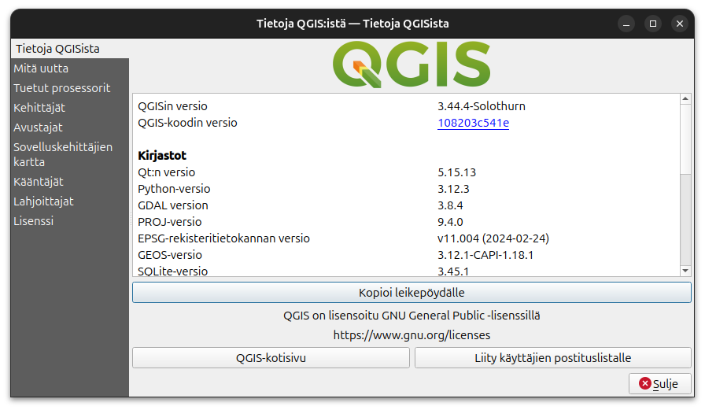

3. Pythonin perusteet
Harjoituksen sisältö: Python-ohjelmointikielen perusteiden läpikäynti.
Harjoituksen tavoite: Harjoituksen jälkeen opiskelija tuntee Pythonin perusteet.
Tämä harjoitus keskittyy PyQGIS-ohjelmoinnin sijasta Python-kielen perusteisiin. Kurssin osallistujilta ei vaadita täydellistä ohjelmointitaitoa, mutta jos ohjelmoinnin perusteet ovat hallussa, niin se auttaa jatkotehtävissä.
Esivalmistelut
Yksinkertaisin tapa käyttää Python-rajapintaa QGISissä on Python-konsolin kautta. Konsolin avulla voidaan syöttää ja ajaa yksittäisiä komentoja tai pidempiä skriptejä. Windowsilla QGIS-asennukseen sisältyy erillinen Python-tulkki, jonka version voit tarkistaa valikosta Ohje -> Tietoja QGISista. Tämä on hyödyllinen tieto, kun haluat selvittää ongelmia koodissa.  QGISin asennukseen sisältyy joitain muita Python-paketteja standardikirjaston lisäksi. QGIS-kirjasto mahdollistaa esim. yhteydenoton QGIS-ohjelmistoon. Asennukseen kuuluu myös esim. gdal/ogr-kirjasto, joka mahdollistaa paikkatietojen manipulointia. Näiden lisäksi asennukseen kuuluu myös PyQt-kirjasto (eli Qt-käyttöliittymäkirjaston Python-sidonta (binding)), joka mahdollistaa graafisen käyttöliittymän luomisen lisäosille.
Python toimii käyttöjärjestelmien välillä hieman eri tavalla. Windows- ja MacOS-käyttöjärjestelmissä QGIS-asennukseen kuuluu oma Python-tulkki, kun taas Linux-pohjaisilla käyttöjärjestelmillä QGIS käyttää järjestelmän Python-tulkkia.
Python-konsoliin pääsee usealla tavalla (kts. alla oleva kuva):
- Sen voi avata QGISin ylävalikosta Lisäosat > Python-konsoli (Plugins > Python Console),
- Pikanäppäinyhdistelmällä Ctrl + Alt + P,
- Klikkaamalla työkalupalkista Python-logon kohdalta

Tarkastellaan konsoli-ikkunan eri osia: vihreästä kolmiosta klikkaamalla komennot suoritetaan (enter-näppäin ajaa saman asian). Muista ikoneista:
 Avaa koodieditorin. Editori helpottaa pidempien skriptien tekoa ja ajamista
Avaa koodieditorin. Editori helpottaa pidempien skriptien tekoa ja ajamista Tyhjentää konsoli-ikkunan edellisistä komennoista
Tyhjentää konsoli-ikkunan edellisistä komennoista Täältä löydät kätevästi linkit PyQGIs API -dokumentaatioon, PyQGIS Cookbookiin
sekä konsolin ohjeisiin.
Täältä löydät kätevästi linkit PyQGIs API -dokumentaatioon, PyQGIS Cookbookiin
sekä konsolin ohjeisiin.
Avaa konsolista koodieditori ja tutki samoin sen ominaisuuksia.
Python-perusteita
Eri harjoitusosioissa on annettu esimerkkejä Python-koodista. Suosittelemme, että esimerkkejä läpikäydessä kopioit esimerkin QGIS-konsolin koodieditorin puolelle ja ajat koodin. Esimerkkien yhteydessä voi myös muokata koodia kokeillakseen eri toimintoja ja lopputuloksia. Esimerkit on annettu koodilaatikossa, josta sen sisällön voi kopioida viemällä hiiren osoittimen laatikon päälle ja klikkaamalla laatikon oikeaan yläreunaan ilmestyvää painiketta.
Komennot
Kuten kaikki tietokoneohjelmat,
myös Python-ohjelmat koostuvat komennoista (command).
Alla esimerkkiohjelma, jossa print-komennolla tulostetaan konsoliin ensin Hello
ja sitten QGIS!. Kokeile syöttää ensimmäisen rivin Python-konsoliin (sieltä mistä löydät >>>) ja paina enteriä. Jos yrität syöttää molemmat rivit samaan aikaan niin konsoli antaa sinulle errorin. Kun haluat ajaa usemman rivin koodia niin käytä oikealla olevaa koodieditoria.
print("Hello")
print("QGIS!")Ohjelma tulostaa:
Hello
QGIS!Kommentit
Python-kielessä rivit, joiden alussa on #-merkki,
eivät vaikuta ohjelman toimintaan.
Näitä kutsutaan kommenteiksi (comment),
ja niillä voi selittää ohjelman toimintaa itselleen tai muille.
Kommentti voi olla myös rivin lopussa.
Kommentoitu esimerkkiohjelma, jonka tuloste on sama kuin yllä:
print("Hello")
# Tämä rivi ei tee mitään
print("QGIS!") # Tulosta QGIS!Luvuilla laskeminen
print-komennon sisälle voi laittaa myös laskutoimituksen,
jolloin tulostuu sen tulos.
print(1 + 1)
print(5 / 2.5)
print(10 - 4 * 2)Tulostaa:
2
2.0
2Muuttujat
Ohjelman tarvitsemaa tietoa, esimerkiksi lukuarvon, voi tallentaa muuttujaan (variable).
Muuttujan luonti:
muuttuja = <arvo>jossa <arvo> voi olla mitä vaan tietoa, joka tallentuu muuttujaan.
Alla esimerkki muuttujien käytöstä:
number1 = 10
number2 = 5
summed = number1 + number2
multiplied = number1 * number2
print(summed)
print(multiplied)Tulostaa:
15
50Muuttujan arvo voi muuttua:
variable = 10
variable = "kymmenen"
print(variable)Tulostaa:
kymmenenTyypit
Olemme käsitelleet jo kolmen eri tyypin (type) tietoa:
Lainausmerkeillä "" merkittyjä merkkijonoja sekä kokonais- ja desimaalilukuja.
type-komennolla voi selvittää tyyppejä:
print(type("merkkijono"))
print(type(1))
print(type(0.5))Tulostaa:
<class 'str'>
<class 'int'>
<class 'float'>Tulosteesta selviää,
että Pythonissa str (string) tarkoittaa merkkijonoa,
int (integer) kokonaislukua
ja float (floating-point number) desimaalilukua.
Tyyppejä on monia, ja niitä voi myös luoda itse.
Tässä esimerkkinä vielä
totuusarvot True ja False (bool).
print(type(True))
print(type(False))Tulostaa:
<class 'bool'>
<class 'bool'>Eri tyypit omaavat erilaisia ominaisuuksia. Esimerkiksi kokonais- ja desimaalilukuja voi käyttää matemaattisten operaattoreiden kanssa laskemiseen, kun taas muilla tyypeillä tämä ei välttämättä aina toimi.
Nämä lausekkeet esimerkiksi toimivat:
print(1 + 1)
print("merkki" + "jono")
print(2 * "GIS")Tulostaa:
2
merkkijono
GISGISSeuraavista lausekkeista tulostuu virheviesti,
virheen syynä TypeError:
print(1 + "1")
print("merkki" - "jono")
print("GIS" / 2)Ehtolauseet ja vertailu
On tyypillistä, että ohjelman suorituksen täytyy muuttua tiettyjen ehtojen mukaan. Usein ehdot perustuvat arvojen vertailuun. Alla Pythonin vertailuoperaattoorit:
| Operaattori | Selite |
|---|---|
| == | Yhtä suuri |
| != | Erisuuri |
| > | Suurempi |
| < | Pienempi |
| >= | Suurempi tai yhtä suuri |
| <= | Pienempi tai yhtä suuri |
Esimerkkinä ohjelma, joka vertaa muuttujan a arvoa erilaisiin merkkijonoihin.
Jos merkkijonot yhtenevät,
kyseisen ehdon sisennetty koodilohko suoritetaan.
Huomaa, että elif-avainsanan ehto tarkastetaan vain jos
edeltävän if-avainsanan ehto ei täyty.
Jos if tai elif ehdot eivät kumpikaan täyty,
suoritetaan else-avainsanan lohko.
Kaikissa tapauksissa suoritetaan viimeinen tulostuskomento.
a = "GIS"
if a == "GIS":
string_to_print = "Q" + a
elif a == "jono":
string_to_print = "merkki" + a
else:
string_to_print = a
print(string_to_print)Tulostaa:
QGISEhtoja voi myös yhdistää loogisilla operaattoreilla and ja or:
temperature = 15
if temperature < 25 and temperature > 10:
print("sopiva")
elif temperature >= 25 or temperature <= 10:
print("liian kylmä tai kuuma")Funktiot
Funktio (function) on koodia, joka kutsuttaessa suorittaa jonkin toiminnon. Funktio voi ottaa vastaan parametreja, jotka vaikuttavat sen suoritukseen, ja se voi myös palauttaa tietoa.
Esimerkiksi print on pythonin sisäänrakennettu funktio,
joka ottaa parametreinä tulostettavia arvoja,
tulostaa ne, mutta ei palauta mitään.
type-funktio sensijaan palauttaa parametrin tyypin.
Funktiokutsu on siis muotoa:
funktio(parametri_1, parametri_2, ... parametri_n)Uusi funktio määritellään def-avainsanalla:
# parametriton funktio, joka ei palauta mitään
def greet():
print("Hello!")
greet()Tulostaa:
Hello!Funktion parametrit määritellään suluissa ()
ja palautusarvo return-avainsanalla.
Funktiota kutsuttaessa parametrit voi antaa joko lyhyesti, eli kirjoittamatta erikseen parametrien nimiä, tai kirjoittamalla sekä parametrin, että sille annettavan arvon:
def multiply(a, b):
return a * b
multiply(2, 3)
multiply(a=2, b=3)Alla vielä kommentoitu esimerkki funktion käytöstä:
def make_greeting(name): # yksi parametri: name
greeting = f"Hello {name}!"
return greeting # palautetaan tervehdys
greeting = make_greeting("QGIS") # palautusarvo muuttujaan greeting
print(greeting)
print(make_greeting(name="Me")) # palautusarvon tulostus suoraanTulostaa:
Hello QGIS!
Hello Me!Huomaa ylläolevassa esimerkissä myös
pelkkien lainausmerkkien "" sijaan f""-muotoa olevan merkkijono.
f-syntaksi mahdollistaa
merkkijonon täydentämisen aaltosulkuihin {} merkityllä sisällöllä.
Funktion sisällä voi olla mitä vaan koodia ja muita funktioita:
def sum_two_positive_integers(a, b):
if type(a) != int or type(b) != int:
print("use integers only")
# tyhjä return lopettaa funktion suorituksen palauttamatta mitään
return
if a < 0 or b < 0:
print("integers must be positive")
return
return a + b # palautetaan summaTietorakenteita
Yksittäisten arvojen lisäksi Pythonissa on myös tietorakenteita, joihin voi tallettaa useita arvoja ja joista voi hakea tietoa eri tavoin.
Lista
Lista (list) on kokoelma tietoa. Se luodaan hakasulkeilla [],
ja sen alkiot (item) erotetaan pilkulla ,.
Alla lista, jossa alkioina luvut 1, 2 ja 3.
my_list = [1, 2, 3]Listan alkioihin pääsee käsiksi niiden indeksillä. Ensimmäisen alkion indeksi on 0, toisen 1, kolmannen 2 jne. Miinusmerkkiset indeksit viittaavat listan loppupäähän, eli listan viimeisen alkion indeksi on -1, toiseksi viimeinen -2 jne.
items = ["first_item", "second_item", "third_item"]
print(items[0])
print(items[1])
print(items[2])
print(items[-1])
print(items[-2])
print(items[-3])Tulostaa:
first_item
second_item
third_item
third_item
second_item
first_itemListassa voi olla mitä vain tietoa, esim:
everything = [True, 3.14, "yes", [1, 2, 3]]Listan alkioita voi muuttaa ja poistaa, ja siihen voi lisätä alkioita.
my_list = [1, 2, "some_item", "last_item"]
my_list[0] = "new_value" # muuta arvo alkiolle 0 indeksissä
print(my_list)
my_list.pop(2) # list.pop poistaa indeksin mukaan
print(my_list)
my_list.remove("last_item") # list.remove poistaa alkion arvon mukaan
print(my_list)
my_list.append("my_new_last_item") # list.append lisää listan loppuun
print(my_list)Tulostaa:
['new_value', 2, 'some_item', 'last_item']
['new_value', 2, 'last_item']
['new_value', 2]
['new_value', 2, 'my_new_last_item']Sanakirja
Sanakirjassa (dictionary) alkiot ovat yksittäisten arvojen sijaan avaimen (key) ja arvon (value) muodostamia pareja. Tietoon pääsee käsiksi avaimen perusteella.
Sanakirja luodaa aaltosuluilla {}, avain ja arvo erotellaan kaksoispisteellä :
ja avain-arvo-parit erotellaan pilkulla ,:
my_dictionary = {"greeting": "Hello!", 10: 1000, "list": [1, 0]}
print(my_dictionary["greeting"])
print(my_dictionary[10]) # Huom! 10 on avain, vaikka onkin numero
print(my_dictionary["list"])Tulostaa:
Hello!
1000
[1, 0]Sanakirjoja voi muokata lisäämällä uusia avain-arvo pareja. Avaimet ovat uniikkeja, eli saman avaimen käyttö korvaa arvon. Myös poistaminen onnistuu.
my_dictionary = {"fruit": "apple"}
my_dictionary["fruit"] = "pear"
my_dictionary["number"] = 42
print(my_dictionary)
# poistot avaimen mukaan
my_dictionary.pop("fruit")
del my_dictionary["number"]
print(my_dictionary)Tulostaa:
{'fruit': 'pear', 'number': 42}
{}Tuple
Tuple on käytännössä muuten samanlainen kuin lista,
mutta se luodaan kaarisuluilla () ja se on muuttumaton:
sen alkioita ei voi muuttaa eikä siihen voi lisätä tai poistaa alkioita.
xyz = (3, 2, 1)
xyz[0] = 0 # ei mahdollista, TypeErrorJoukko
Joukko (set) on myös samantyylinen kuin lista,
mutta se luodaan aaltosuluilla {} ja jokainen sen alkio on uniikki.
my_set = {1, 1, 2, 2, 3, 3}
print(my_set)Tulostaa:
{1, 2, 3}Pythonin sisäänrakennetuilla set- ja list-funktiolla voi karsia esim. listan
vain sen uniikkeihin elementteihin.
list_with_duplicates = [1, 1, 1, 0]
print(set(list_with_duplicates))
print(list(set(list_with_duplicates)))Tulostaa:
{0, 1}
[0, 1]